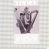

Celtic Lyrics Corner > Artists & Groups > Sìleas > Delighted With Harps
|  |
Delighted With Harps
(1987) |
| Tracks : |
1. The Brigs: The North Brig O' Edinburgh/The Brig O' Perth
2. Cadal Chan Fhaigh Mi (I Can Get No Sleep) 3. Reels: Millbrae/The Spey In Spate 4. Eppie Morrie 5. Air And Reel: The Chanters Tune/Marry Me Now 6. Da Day Dawn 7. The Little Cascade 8. Tha Mulad 9. 'S Coltach Mi Ri Craobh Gun Duilleag (I Am Like A Tree Without Leaves)/Feadan Glan a'Phiobair (The Pipe's Crisp/Clean Chanter) 10. John Anderson My Jo 11. The Judges Dilemma/The Inverness Gathering |